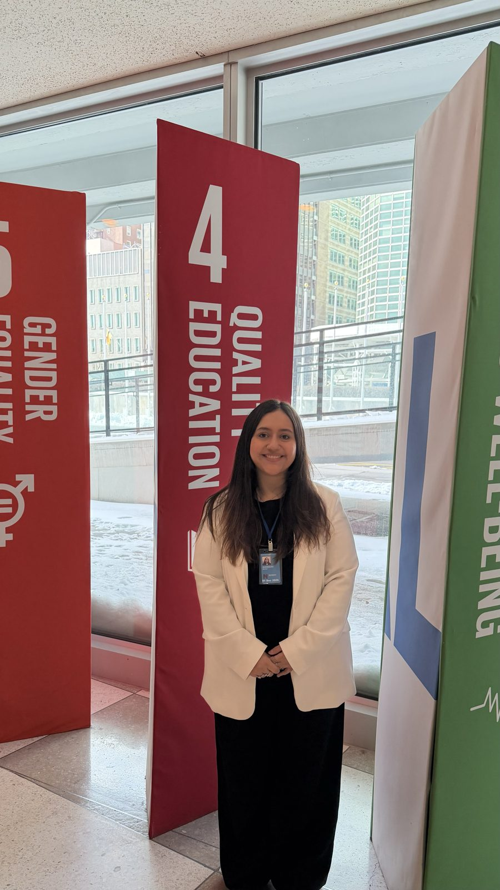

Reducir las barreras de quienes aprenden de maneras diferentes.
Con herramientas accesibles para estudiantes y recursos concretos para escuelas y docentes, estén donde estén.
¡Hola! Soy Marisol Rodríguez. Crecí en Comandante Nicanor Otamendi, un pueblo de la provincia de Buenos Aires, donde los apoyos para aprender no llegaban igual a todas las personas.
Con el tiempo entendí que las barreras no aparecen solo por la distancia. También aparecen cuando las herramientas educativas no tienen en cuenta las distintas formas de aprender. Y eso pasa en el campo y también en la ciudad.
Por eso creé We Grow App: para que cada estudiante pueda aprender a su manera y cada escuela tenga cómo acompañarlo, sin importar dónde esté.

Con herramientas accesibles para estudiantes y recursos concretos para escuelas y docentes, estén donde estén.
Adapta materiales, ordena el estudio y facilita el trabajo docente con estudiantes con TDAH, dislexia u otras formas de aprender.
Trabajamos con escuelas y estudiantes, con la mirada puesta en toda América Latina.
Presentamos We Grow App en el Foro de la Juventud del ECOSOC, en el panel sobre el Objetivo de Desarrollo Sostenible 9: industria, innovación e infraestructura.
Ver en YouTubeSi sos parte de una escuela, una organización o querés aportar tu experiencia, nos encantaría conocerte.